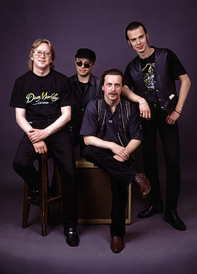
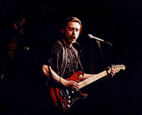
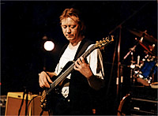
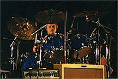
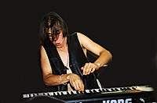

|
J.A.M. Анатолий Морозов Горючий коктейль "Современный электроблюз", замешанный на традициях чикагского ритм-энд-блюза, британского блюз-рока, приправленный специями блюза Техаса. Мощный эмоциональный заряд "вечнозеленых" стандартов, облаченных в современный насыщенный саунд и порой непредсказуемую форму, а также свое собственное ощущение блюза в авторских композициях. Свободная атмосфера спонтанного музицирования и драйв, способный раскачать стены. |
 |
ВСЕ ЭТО - J.A.M.
|
    |
Под этим названием, появившимся в 1988г. сменилось множество музыкантов при неизменном участии гитариста Анатолия Морозова. Пройдя через период увлечения музыкой soul, funk, jazz-rock, с 1992г. группа исполняет rhythm-and-blues. Костяк сегодняшнего состава сложился к апрелю 1995г. В него вошли: Анатолий МОРОЗОВ (гитара, вокал), Александр СВИСТУНОВ (бас-гитара), Сергей ПАРИГИН (барабаны), c 1997г. на органе играет Евгений ЛЕПИХИН. Репертуар группы, построенный исключительно на англоязычном материале, cоставляют аранжированные и оригинально исполненные классические (old'n'gold) номера ритм-энд-блюза таких выдающихся блюзменов как Willy Dixon, John Lee Hooker, Howlin' Wolf, Jimmy Reed, Robert Johnson, Stevie Ray Vaughan и др., а также оригинальные авторские композиции, написанные в традициях этой музыки. С 1995г. J.A.M. выступает в московских блюзовых клубах: Arbat Blues Club, B.B.King, Armadillo, Forte (в январе 96-го на фестивале в Arbat Blues Club с участием 16 московских команд группа названа в числе 4-х лучших), является лидером клубной сцены Нижнего Новгорода ("Дом Петра", Shamrock, "Бочка", Crazy Bison, JAM Prestige, Rocco), участвует в фестивалях (гран-при фестиваля "Знай Наших" в 1997г., инициатор и постоянный участник ставших традиционными мини-фестивалей Night Blues Action c приглашением ведущих блюз-бэндов Москвы и Санкт-Петербурга). J.A.M. с успехом участвует в международных проектах. В апреле 97-го наряду с музыкантами из Франции, Германии, Швейцарии выступает на фестивале "Джаз России 97". Cдержанная джазовая публика, испытывая мощное блюзроковое воздействие, была не в состоянии усидеть в креслах, а J.A.M.'у, единственной группе, отыграв обязательные 40 минут, понадобилось выходить на "бис". Тогда и появилось изречение "When J.A.M. is on, only deaf and legless stay seated..." В мае 99-го группа играет в феерическом шоу с британским Fun-Da-Mental. Зрители в ожидании концерта говорили: "Мы пока не знаем, что такое Fun-Da-Mental, но хорошо знаем, что такое J.A.M." В начале 2000 г. выходит сборник лучших блюзовых исполнителей России "Весь Этот Наш Блюз - Не увижу Миссиссиппи", в который включен J.A.M. со своей композицией "Mouse Trap". В мае 2000 г. в Москве J.A.M. выпала почетная роль открывать первый фестиваль BLUES SUMMIT. В том же году проходят концерты группы во Владимире (ОДРИ), Самаре ("Сквозняк"), Санкт - Петербурге (JFC, City, Jimi Hendrix), Москве (Forte, B.B. King, "Запасник"). |
|
Аудиоклипы:
| MP3 | Real Audio |
| "Mousetrap"
4'09 (А.Морозов - С.Авилов) записано 23.02.1997г. |
"Linda Harley"
4.10 (А.Морозов - С.Авилов) записано 20.01.1997г. |
| "Shame,
Shame" 2.34 (Jimmy Reed) записано 15.05.1995г. |
"Double Trouble"
6.26 (Otis Rush) записано 15.05.1995г. |